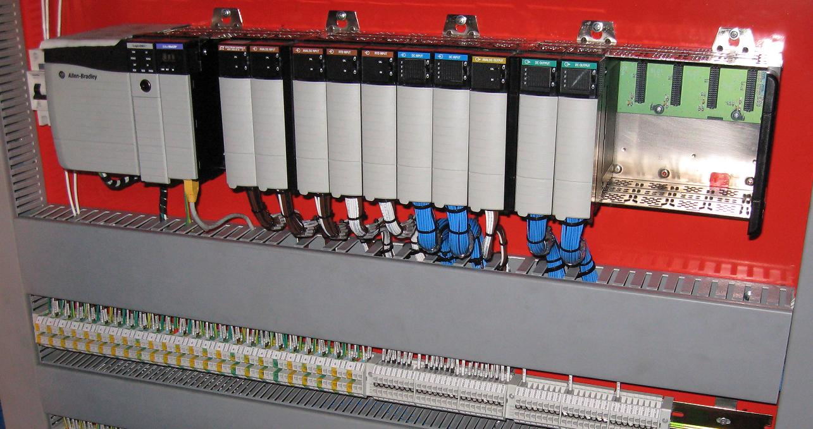

Build and test a start–stop PLC sequence
A conveyor must run after a momentary start request, stop when the permissive drops and stay off after it returns. Make a test table before you write the rung.
Use the sequence trainer on this page first. For the second pass, use your PLC vendor’s simulator or a supervised extra-low-voltage trainer with two buttons and a lamp. Use isolated simulator I/O.
Name the inputs and outputs

Photo by MakeMagazinDE, resized. Original photo · CC BY-SA 4.0.


Photo by Cmarcante, with labels added. Original photo · CC BY-SA 3.0.

| PLC tag | Meaning when true | Independent check |
|---|---|---|
| START_EDGE | New press of Start | Input watch table |
| STOP_OK | Stop loop healthy | Disconnect on trainer and verify that the bit becomes false |
| GUARD_OK | Training interlock satisfied | Watch the bit change before Start |
| MOTOR_CMD | Normal logic commands the load | Lamp on a test output |
| RUN_PROOF | Auxiliary feedback shows the load running | A second switch on the trainer |
Implement the sequence in a trainer
In ladder logic, chain STOP_OK and GUARD_OK in series with a branch that accepts a new Start edge or the existing seal-in bit. Use a non-retentive run request. Use an on-delay timer while the run request is true and proof is absent. Latch the diagnostic on timeout, drop the training command, and allow reset when the request is off and permissives have returned. Program a release and new press requirement for restart.
Watch on YouTube · Follow how field wiring becomes a ladder contact. Then use the trainer to prove the extra timing and reset behavior. How to Convert a Basic Wiring Diagram to a PLC Program · RealPars.
A normal PLC rung is ordinary machine control. Study the real separation of safety-rated stop functions and the process controller in T34. Use the simulator or lamp for the exercises here. Siemens SCE training documents.
Try the cases a service technician would see
- With permissives true, press Start and apply proof before 3 seconds elapse. Confirm the command stays on.
- Keep proof off on a second run. Advance 3 seconds. The command must drop and the fault must latch. Restore proof and observe that the command stays off.
- Start with proof present, drop Stop OK, then return it. The command stays off until a deliberate new Start. Repeat for Guard OK.
- Fault the logic deliberately in the simulator: bypass the test permissive in your own copy, run the checklist, then restore the rung. Record which case catches it.
Save evidence for the next technician
Keep the I/O list, rung view, and test record containing starting inputs, commanded output, feedback, alarm and expected result for each row. Record the timing. Retest starting from the same state after correcting the bug.
T30 · Firmware timing, state machines and recovery
T34 · Control signals, PLC scans and independent proof